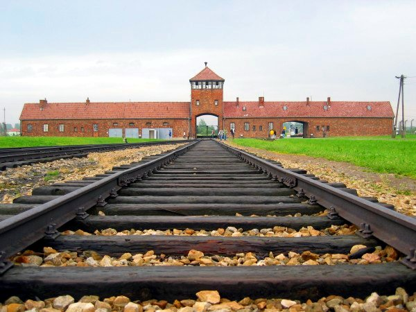

El Ejército Rojo halla en Auschwitz un campo de exterminio con millares de prisioneros moribundos
Las tropas soviéticas han entrado hoy en el campo alemán de Auschwitz y hallado a unos siete mil prisioneros extenuados, junto a depósitos de cabello humano, anteojos y valijas con nombres. Los alemanes se retiraron días antes, arreando a decenas de miles por los caminos. El mundo empieza a conocer la dimensión de lo que aquí se hizo.

Las tropas soviéticas que avanzan por el sur de Polonia han entrado hoy en un vasto campo de prisioneros levantado por los alemanes junto a la localidad de Oświęcim, que ellos llaman Auschwitz. Lo que los soldados han encontrado tras las alambradas no se parece a nada de cuanto esta guerra, pródiga en horrores, había mostrado hasta ahora. Unos siete mil prisioneros seguían con vida, aunque la palabra vida apenas les cuadra: son cuerpos reducidos a los huesos, incapaces muchos de tenerse en pie, que miraron llegar a sus libertadores casi sin fuerzas para comprender que lo eran. Los demás habían sido llevados lejos días atrás.
A medida que los soldados recorren el recinto, la magnitud de lo que allí se hizo empieza a tomar forma, y es de las que sobrecogen a hombres curtidos en el frente. En depósitos y barracones se han hallado cosas cuya sola enumeración basta: montañas de cabello humano cortado y guardado; anteojos a millares; ropa, calzado y valijas amontonadas, muchas con nombres escritos por sus dueños. Hay también instalaciones cuya función los primeros testimonios de sobrevivientes describen con palabras que cuesta transcribir. Los mandos soviéticos, ante lo que ven, ordenan reunir pruebas y recoger declaraciones, conscientes de que habrán de dar cuenta de esto al mundo.
Del funcionamiento de estos campos algo había trascendido durante la guerra, por relatos de fugitivos y por informes que muchos, allá lejos, se resistieron a creer por su misma enormidad. Ahora los hechos salen al encuentro de quien quiera verlos. Los alemanes, sabiéndose perdidos en este frente y con el Ejército Rojo cada vez más cerca, evacuaron el campo pocos días antes de la llegada, arreando por los caminos nevados, a pie, a decenas de miles de prisioneros hacia el interior del Reich; muchos han quedado tendidos en esas rutas. Atrás dejaron a los que ya no podían caminar, y el propósito, visible en los edificios semidestruidos, de borrar las huellas.
Los primeros en acercarse cuentan escenas que prefieren referir con parquedad. Prisioneros que no atinaban a creer en su liberación; enfermos que ya no distinguían el día; niños entre los sobrevivientes. Los médicos militares hacen lo que pueden por quienes están tan extenuados que el mismo alimento puede matarlos si se les da sin tino. No hay en los relatos de los soldados jactancia ni retórica, sino un silencio espeso, el de quienes carecen de palabras a la altura de lo que tienen delante. Muchos de estos hombres han visto arder aldeas y morir compañeros; ninguno, dicen, había visto algo semejante a esto.
Un diario que se propone contar lo que ocurre tropieza hoy con los límites del oficio. Ningún adjetivo añade nada a estos hechos, y toda elocuencia sobra ante ellos; basta y sobra con enunciarlos. Lo que en este campo se hizo no se conoce aún en toda su extensión, y quizá tarde en conocerse, porque hay cosas que la razón se niega a abarcar de golpe. Pero desde hoy el mundo no podrá alegar ignorancia: aquí hubo un designio deliberado de suprimir seres humanos en número que espanta. Queda para más adelante el juicio; hoy solo cabe registrar, con la voz baja que el caso impone, que esto sucedió.